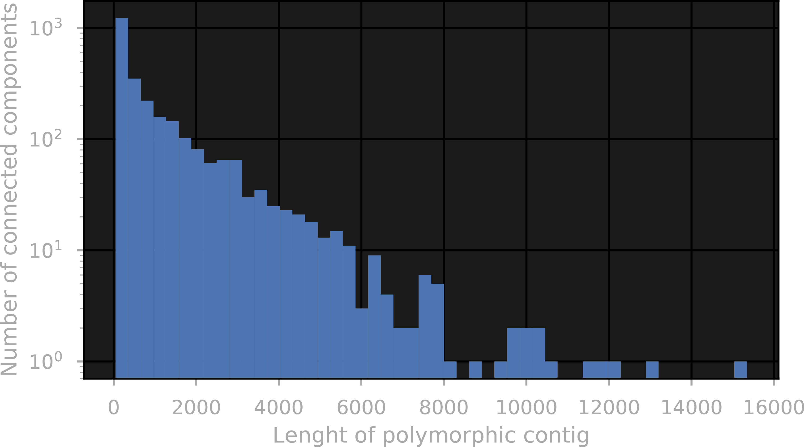

Linking genomic variants discovered by DiscoSnp
Maël Kerbiriou
Tutors : Pierre Peterlongo, Claire Lemaitre


Genetic variation
- Single Nucleotide Polymorphisms (SNPs)
- Insertion / Deletions
- Inversions, structural variants, ...
Methods for variant calling
with a reference genome
- Align reads on the reference
- Tools for calling SNP from deviations to the reference
(e.g. GATK)
Dependant on the availability and quality of assembly.
Methods for variant calling
without reference genome
- Construct a reference or partial assemblies
(e.g. DISCOVAR) - Other methods are based on de Bruijn Graphs
including DiscoSnp
DiscoSnp uses
A de Bruijn Graph
is a directed graph with :
- Sub-strings of length k as vertices (k-mers) :
\(V \in \{A,\,C,\,G,\,T\}^{k}\) - edges between vertices sharing k-1 nucleotides :
\(E=\left\{ (u,v)\;|\;(u,\,v)\in V^{2},\,\textrm{suf}_{k-1}(u)=\textrm{pre}_{k-1}(v)\right\} \)

DiscoSnp
Pipeline
Limitations
- The positions of variants relative to each other is not known
DiscoSnp
Pipeline
DiscoSnp
Limitations
- The positions of variants relative to each other is not known (unless we have a reference genome)
- Redundancy for polymorphic sites with more than two states

Objectives
- Link variants together, providing relative position informations,
- and reduce the redundancy in the output caused by more than two states per loci.
- Validate !
Linking variants
by unitigs

Linking variants
Overlapping bubbles

Linking variants
Method overview

Validation
- Halfway done
- Simulated read-set from the first 5Mbp from the chr1 of H. sapiens
+ SNPs from 2 individuals of the 1000 Genomes Project
Validation
- 7976 SNP + 681 Indels
- 6566 overlaps between 7386 bubbles
- 1444 polymorphics contig with at least 2 bubbles
Length of polymorphic contigs
Validation
Comparison of SNP positionsValidation shown in the report
77.7% of positions agree with the alignement on the reference
Aligning polymorphic contigs on the reference
81% of the 1444 polymorphic contigs maps with more 95% of base matches
Validation
Comparison of SNP positionsValidation shown in the report
77.7% of positions agree with the alignement on the reference
- 7.9% are mispositioned by a few base pairs
- 14.9% are aligned on different genomic regions or on the opposite strand
Experiment
RAD-seq
Heliconius melpomena
Future works
Short-term
- Better characterisation of failure modes
- More stringent filters for linking bubbles
- Integration in the pipeline, documentation
Perspectives
- Align reads on the polymorphic contigs
- Phase variants

Contributions
- Method for linking bubbles based on (k-1)-mer
- pyGATB: a python library for interactive manipulation of dBGs
- Various contributions to discoSNP code (tests, debugging, refactoring)